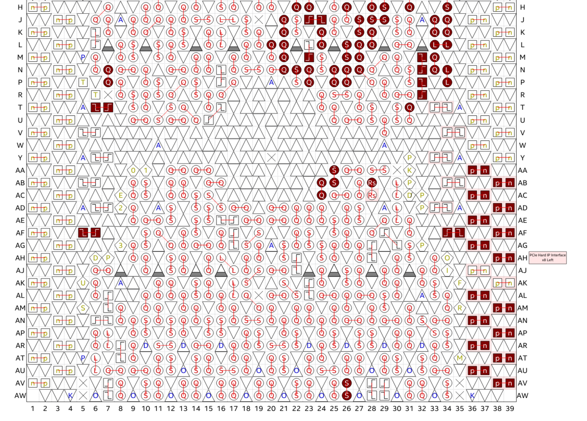
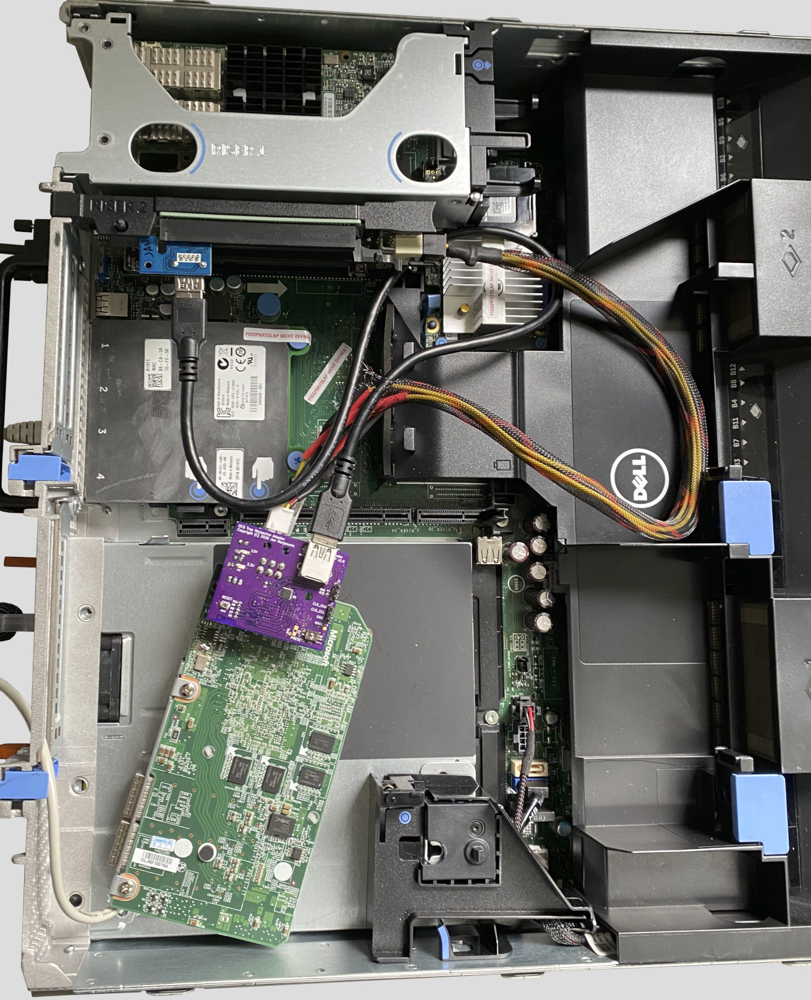
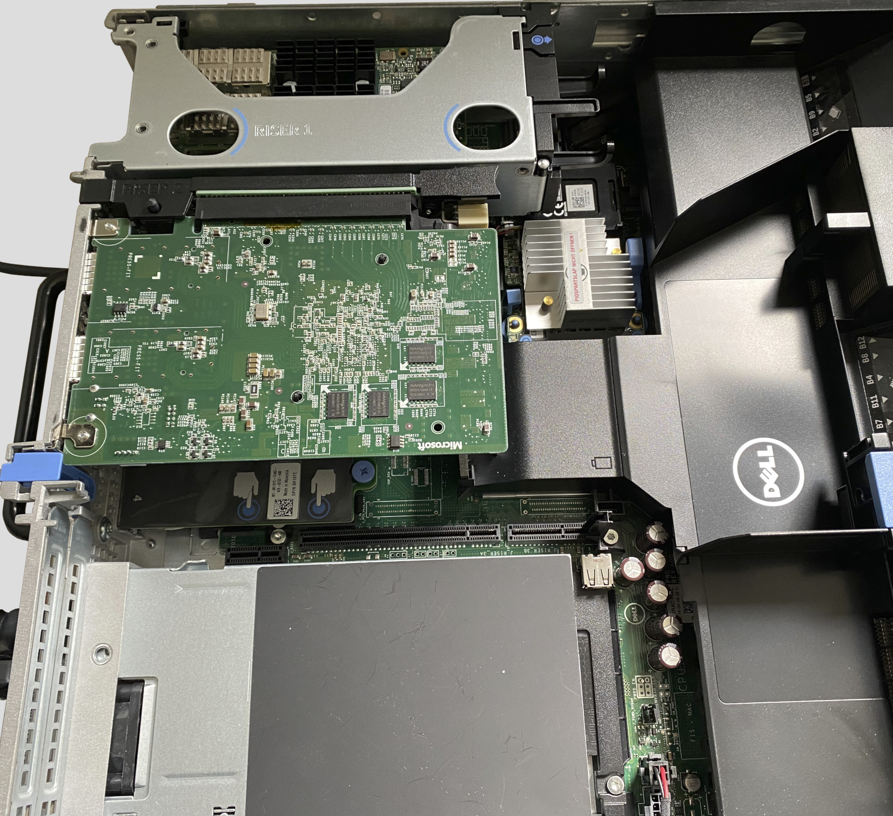
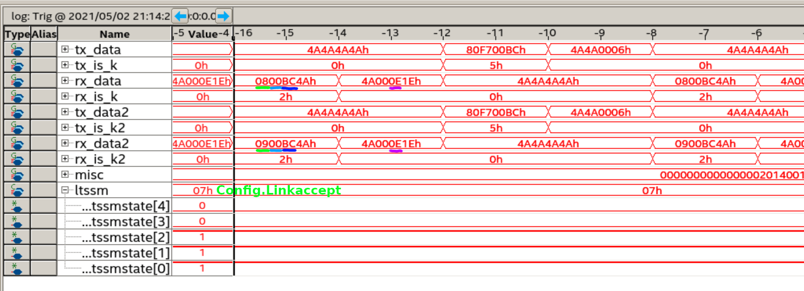
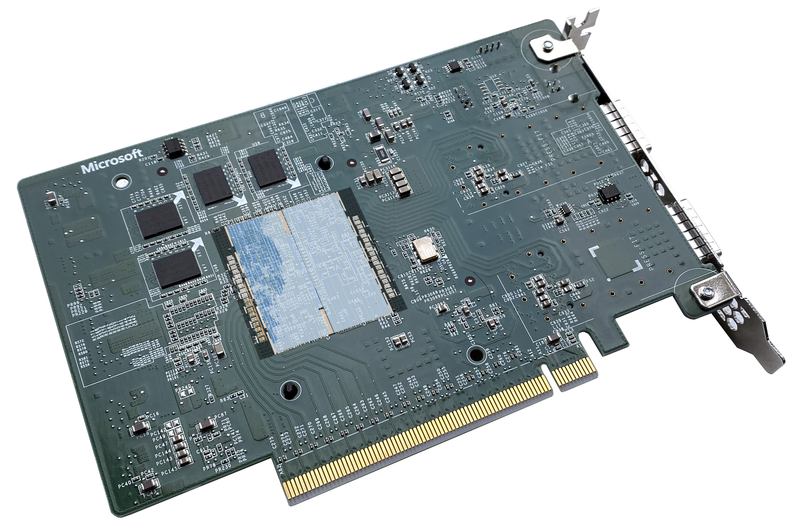
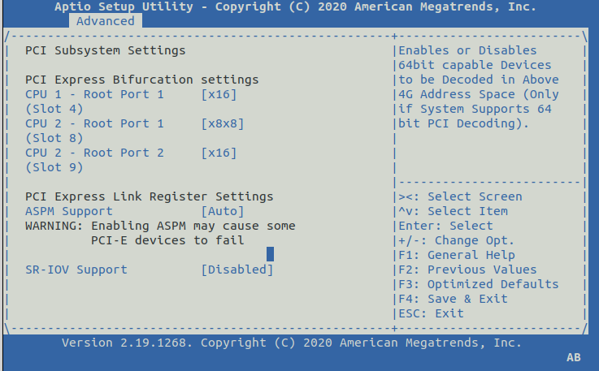
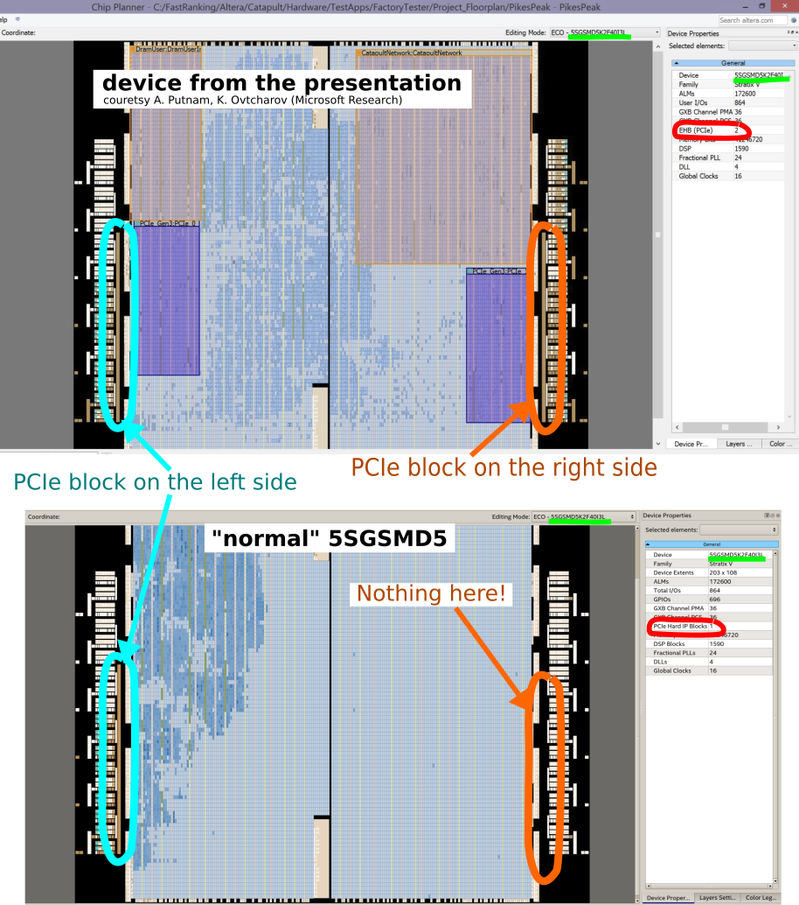
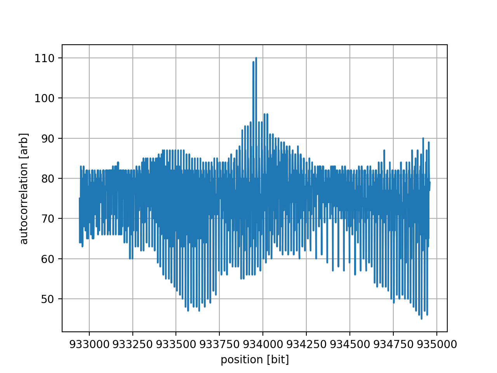
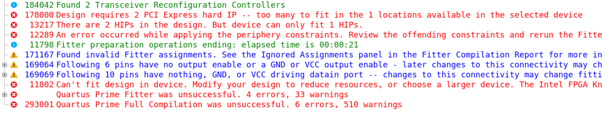

- on Sat 15 May 2021
The reverse engineering of the FPGA accelerator card from eBay is progressing well and documenting the DDR3 interface was a huge step forward. However, there is still one important part of the board which is not fully uncovered, the PCI Express® interface.
Hardware
Pikes Peak
Pikes Peak is a Stratix® V-based FPGA accelerator conforming to Open CloudServer
OCS Tray Mezzanine
Specification.
It connects to the motherboard with a 160-pin connector which provides power,
management, and a 16-lane-wide PCIe interface. With the resistors on the
PCIE_CFG_ID, Pikes Peak indicates 2 x8 bifurcation.
I have explored the various details of this board in previous posts on my blog. Important for today's discussion is the part 2, where using a custom HW adapter I was able to establish the connection between the PC and the FPGA using the factory image on the board (stored in on-board Flash).
The part number of the device (5SGSD5) indicates that it contains one
PCIe hard IP block.
At that time I have assumed that one link of 8 PCIe lanes is connected to the PCIe hard IP block and that another x8 link is connected to 8 transceivers on the other side of the device, maybe with the PCIe IP implemented in logic. Later we will explore why this assumption is not correct.
Storey Peak
Storey Peak contains (roughly) the same components as Pikes Peak but in a "normal" PCIe card form factor. For me, as a hobbyist who is not very keen on designing custom HW and prefers to stay in the FPGA domain, this form factor is much more convenient.
I have presented the main components of this board in a series of tweets a couple of weeks ago:
Tweet of janmarjanovic/1383876145821589505
An attentive reader will note the difference between the PCIe devices IDs on
Storey Peak and Pikes Peak: Store Peak reports 0xb101 while Pikes Peak reports
0xb100.
First test
I have
instantiated
the Avalon-MM Stratix V Hard IP for PCI Express and connected it to a couple
of peripherals (GPIO, System ID) to provide a minimal example for access
from the computer. I have also connected the Hard IP status interface to the
Nios II processor, which allows me to query the status of the PCIe link over the
JTAG. There is only 1 location where the PCIe lanes can be connected in a
normal 5SGSD5 (annotated in light pink in the image below), so I connected the
PCIe lanes there.

First test with Pikes Peak
Once everything was set up I have connected the Pikes Peak board through the x1 extender to one of the slots in my DELL PowerEdge R720.

The "OTMA adapter" does not properly connect the reset pin to the Pikes Peak connector, and I had to manually issue a reset command after power-up. Below is the output from the CLI running on the Nios II processor in FPGA:
init done
pp_sp_example > pcie status
pcie:
id = 2c1e57a7
version = 10000
status.cur speed = 0
status.LTTSM state = 0
status.lane act = 0
status.DL up = 0
pp_sp_example > clks
Clock counter: ident = 0xc10cc272, version = 0x10000
Clock frequency [0] = 124.999 MHz
Clock frequency [1] = 644.531 MHz
Clock frequency [2] = 99.998 MHz
Clock frequency [3] = 99.998 MHz
Clock frequency [4] = 0.000 MHz
Clock frequency [5] = 0.000 MHz
Clock frequency [6] = 0.000 MHz
Clock frequency [7] = 0.000 MHz
pp_sp_example > pcie reset
pcie: asserting reset...
pcie: deasserted reset...
pcie: reset deasserted
pp_sp_example > pcie status
pcie:
id = 2c1e57a7
version = 10000
status.cur speed = 2
status.LTTSM state = f
status.lane act = 1
status.DL up = 0
We see that clocks 2 and 3 are both 100 MHz, which indicates that the PCIe clock distribution works correctly, and after the reset the link reports:
- current speed: 5 GT/s - maximum supported by the IP in this configuration
- LTSSM state: L0 - this is the state in which the state machine should be
- lane active: 1 - as expected, the USB cable contains only one high-speed differential lane
This is all looks very promising; once the PC boots I am also able to get the
same information from the lspci utility:
$ sudo lspci -s 03:00 -vv
03:00.0 Non-VGA unclassified device: Altera Corporation Stratix V (rev 01)
Subsystem: Device 01a2:0001
Control: I/O- Mem+ BusMaster+ SpecCycle- MemWINV- VGASnoop- ParErr- Stepping- SERR- FastB2B- DisINTx-
Status: Cap+ 66MHz- UDF- FastB2B- ParErr- DEVSEL=fast >TAbort- <TAbort- <MAbort- >SERR- <PERR- INTx-
Latency: 0, Cache Line Size: 64 bytes
Interrupt: pin A routed to IRQ 15
NUMA node: 0
Region 0: Memory at df800000 (32-bit, non-prefetchable) [size=2M]
<...>
Capabilities: [80] Express (v2) Endpoint, MSI 00
DevCap: MaxPayload 128 bytes, PhantFunc 0, Latency L0s <64ns, L1 <1us
ExtTag- AttnBtn- AttnInd- PwrInd- RBE+ FLReset- SlotPowerLimit 25.000W
DevCtl: CorrErr- NonFatalErr+ FatalErr+ UnsupReq+
RlxdOrd+ ExtTag- PhantFunc- AuxPwr- NoSnoop+
MaxPayload 128 bytes, MaxReadReq 512 bytes
DevSta: CorrErr+ NonFatalErr- FatalErr- UnsupReq- AuxPwr- TransPend-
LnkCap: Port #1, Speed 5GT/s, Width x8, ASPM not supported
ClockPM- Surprise- LLActRep- BwNot- ASPMOptComp+
LnkCtl: ASPM Disabled; RCB 64 bytes Disabled- CommClk+
ExtSynch- ClockPM- AutWidDis- BWInt- AutBWInt-
LnkSta: Speed 5GT/s (ok), Width x1 (downgraded)
TrErr- Train- SlotClk+ DLActive- BWMgmt- ABWMgmt-
<...>
And finally, I can use pcimem to read and write to the registers in the FPGA,
e.g. read system ID and timestamp and write to a GPIO pin:
$ sudo ./pcimem /sys/bus/pci/devices/0000:03:00.0/resource0 0x100000 w
/sys/bus/pci/devices/0000:03:00.0/resource0 opened.
Target offset is 0x100000, page size is 4096
mmap(0, 4096, 0x3, 0x1, 3, 0x100000)
PCI Memory mapped to address 0x7f3ecc8ba000.
0x100000: 0x01A20001
$ sudo ./pcimem /sys/bus/pci/devices/0000:03:00.0/resource0 0x100004 w
/sys/bus/pci/devices/0000:03:00.0/resource0 opened.
Target offset is 0x100004, page size is 4096
mmap(0, 4096, 0x3, 0x1, 3, 0x100004)
PCI Memory mapped to address 0x7f65b24b3000.
0x100004: 0x6097B8A9
$ sudo ./pcimem /sys/bus/pci/devices/0000:03:00.0/resource0 0x0 w 1
/sys/bus/pci/devices/0000:03:00.0/resource0 opened.
Target offset is 0x0, page size is 4096
mmap(0, 4096, 0x3, 0x1, 3, 0x0)
PCI Memory mapped to address 0x7fec6c0cc000.
0x0000: 0x00000000
Written 0x0001; readback 0x 1
The proverbial "blinky" is actually blinking and so far everything seems to be working correctly.
First test with Storey Peak
Encouraged by the success with the Pikes Peak board and the adapter PCB, I have installed the Storey Peak board instead. Compared to the Pikes Peak board and the cable salad there, this one fits much nicer - both from purely esthetic as well as thermal point-of-view.

And here I encountered an unpleasant surprise. Although the clocks are there, the PCIe link can never reach the L0 state, i.e. the link never finishes training.
pp_sp_example > pcie status
pcie:
id = 2c1e57a7
version = 10000
status.cur speed = 1
status.LTTSM state = 1a
status.lane act = 8
status.DL up = 0
Intel® provides good troubleshooting resources for the PCIe link, and I have decided to have a look at the PIPE interface to see the data exchange between the FPGA and the CPU.

We can decode the data received by the first two transceivers and obtain the information from the TS1 ordered sets:
| field | xcvr 0 | xcvr 1 | |
|---|---|---|---|
| COM | 0xBC (K28.5) | 0xBC (K28.5) | |
| Link # | 0x00 | 0x00 | |
| Lane # | 0x08 | 0x09 | |
| N_FTS | 0x1E | 0x1E | |
| Rate ID | 0x0E | 0x0E |
We see that the first transceiver receives lane number 8 and the second transceiver receives lane number 9. At this point one can look again at the board, and realize that the upper 8 lanes are connected to the PCIe Hard IP in the FPGA.

This explains why we see lane 8 on the first transceiver, and also explains why the link does not get established.
Storey Peak in a computer which supports bifurcation
Just for a test, I have plugged the Storey Peak card in a computer that supports 2 x8 bifurcation on a x16 slot.

We can see that in this configuration there are two PCIe endpoints presented:
$ lspci
<...>
86:00.0 Unassigned class [ff00]: Microsoft Corporation Device b100 (rev 01)
87:00.0 Unassigned class [ff00]: Microsoft Corporation Device b101 (rev 01)
<...>
And each of them supports a x8 link. It is theoretically possible that one of the endpoints is implemented in FPGA logic, but we will later see that this is not the case.
$ sudo lspci -s 86:00 -vv
86:00.0 Unassigned class [ff00]: Microsoft Corporation Device b100 (rev 01)
<...>
LnkCap: Port #1, Speed 8GT/s, Width x8, ASPM not supported, Exit Latency L0s <4us, L1 <1us
<...>
LnkSta: Speed 8GT/s, Width x8, TrErr- Train- SlotClk+ DLActive- BWMgmt- ABWMgmt-
<...>
$ sudo lspci -s 87:00 -vv
87:00.0 Unassigned class [ff00]: Microsoft Corporation Device b101 (rev 01)
<...>
LnkCap: Port #1, Speed 8GT/s, Width x8, ASPM not supported, Exit Latency L0s <4us, L1 <1us
<...>
LnkSta: Speed 8GT/s, Width x8, TrErr- Train- SlotClk+ DLActive- BWMgmt- ABWMgmt-
<...>
Unfortunately the DELL R720 which I use in my homelab does not support PCIe bifurcation.
Investigation
With some confusion regarding the assignment of PCIe lanes and the number of hard IP blocks in this device, it is time to carefully check the presentation on Heterogeneous Computing @ Microsoft
Shown on slide 14 is the screenshot from Quartus® Chip Planner. Comparing this screenshot with the Chip Planner view for a "normal" device, we can note that in the presentation there is an additional PCIe block, which is not present in a normal device.

Web search
There were a couple of speculation on Twitter by @rombik_su and reddit on what this part might be, and we can see that the last part of the code (reserved for Special order devices) contains AC.
Tweet of rombik_su/1257741366144180226
Searching for the full code (5SGSKF40I3LNAC) also finds a PDN from Intel with a comment that the device is available "Upon Request, Please Contact Sales".
There is also a thread on the Intel forum by somebody from Quanta who has a problem with a post-production check on this device.
Bitstream analysis
At this point it is pretty clear that this device is a custom part with 2 PCIe Hard IPs. I was curious if I am able to find the evince of the second IP in the bitstream.
I have used the same approach as for the DDR3 controller: by changing one variable at the time I was able to isolate the address in the JIC file which corresponds to the individual PCIe IP parameter. By repeating this procedure I was able to extract addresses for several parameters, especially interesting are the ones that can be observed from the outside, such as vendor ID, device ID, BAR type and size, ...
After I have managed to find the location of several parameters, I have
extracted the values from the original JIC. As expected, one can easily
see Microsoft® vendor ID (0x1414) and the device ID (0xb100):

I have then taken the bits which correspond to the PCIe block on the left side and performed a weighted autocorrelation on the bitstream. The procedure and the result can be found in a Jupyter notebook.
One can see that there is a strong peak very close to the original
configuration: the second configuration differs by just 1 bit. This is exactly
what one can expect since we know that the two endpoints have different device
IDs (0xb100 and 0xb101).

With this we can confirm that there is a configuration for the second Hard IP stored in the factory image in the on-board Flash.
Conclusion
It is now clear that this board contains a custom part with two PCIe hard IP blocks. Unfortunately, the block which is available in a normal device is connected to the high lanes (lanes 8-15), and this requires at minimum some support from the motherboard to be useful.
There are several possibilities on how to proceed here:
Playing stupid method
I tried playing stupid and just instantiated two hard IPs in my design. Quartus was (as expected), not so easily fooled:

Riser cable
One could take a x16 riser cable and resolder the wires to swap the two x8 connections on the connector. This will only provide 8 lanes, as the second hard IP cannot be used (yet).
Upgrading my homelab server
Is somebody interested in buying a DELL PowerEdge R720? :)
Soft PCIe IP
One could think about developing a soft IP and connect it directly to the transceivers. The development effort here would be enormous since Physical, Data, and Transaction Layers need to be handled in the logic. On the other hand, this could also be a great learning experience to get familiar with the lower layers of protocol, which are usually handled by a dedicated PCIe block. Additionally, one would have to use few advanced features of the transceiver itself (rate change, 8b/10b and 128b/130b decoder, receiver detection, lane bonding, ...).
Manipulating the bitstream
Since we have the configuration stored in the factory bitstream, one could consider "pasting" this configuration on top of a normal bitstream. This method does not seem user-friendly, and the main obstacle would be connecting the user logic to the second (unknown) hard IP.
Unlocking the custom part in Quartus
The database for this custom part is either already integrated into Quartus or it is delivered to the customer as a separate package (e.g. a DLL or a shared object).
If one greps for 5SGSMD5 in the Quartus directory there is a library that
contains a couple of interesting strings:
$ strings libddb_dstr.so | egrep '5SGSMD5'
<...>
5SGSMD5H3F35I3LNAA
<...>
5SGSMD5K3F40I3YY
<...>
5SGSMD5_MS
So far hard work and determination have paid off. It seems that continuing to poke around Quartus libraries would be the right way ahead.